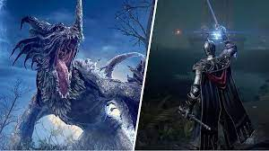
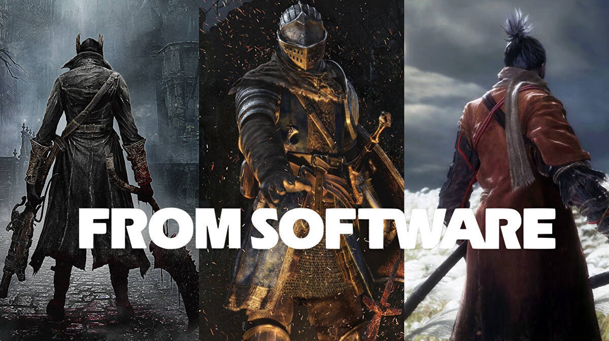

Welcome to the enchanting realm of Elden Ring, a highly anticipated masterpiece that transcends the boundaries of traditional gaming. Crafted through the collaborative brilliance of Hidetaka Miyazaki, the visionary behind the Dark Souls series, and the renowned author George R.R. Martin, Elden Ring promises an epic adventure of unparalleled proportions. Immerse yourself in a breathtaking open-world filled with lore, mystery, and peril, where the boundaries between reality and fantasy blur. In Elden Ring, players are beckoned to a land known as the Lands Between, a sprawling, interconnected world teeming with fantastical landscapes, menacing foes, and ancient secrets waiting to be unearthed. The titular Elden Ring, a symbol of immense power, has shattered, plunging the world into chaos and setting the stage for an odyssey that will test the mettle of those brave enough to embark on it.Prepare to navigate a rich tapestry of dark fantasy, where every corner holds the promise of discovery and danger. With its unforgiving combat mechanics, atmospheric storytelling, and awe-inspiring visuals, Elden Ring stands poised to redefine the gaming landscape and captivate the hearts of adventurers seeking a truly immersive and challenging experience. Enter the world of Elden Ring, where destiny awaits and legends are forged in the crucible of an unforgettable journey
About
"Elden Ring" is an action role-playing game developed by FromSoftware and published by Bandai Namco Entertainment. The game is a collaboration between Hidetaka Miyazaki, the creator of the "Dark Souls" series, and George R. R. Martin, the author of "A Song of Ice and Fire" series, which inspired the television series "Game of Thrones." Set in a dark fantasy world called the Lands Between, "Elden Ring" features a vast and interconnected open-world environment. The central plot revolves around the shattering of the Elden Ring, a powerful artifact that has maintained the balance of the world. The fragments of the Elden Ring have given rise to the demigods, each possessing unique powers. Players take on the role of a Tarnished, an exiled individual seeking to become an Elden Lord by collecting the Great Runes scattered across the lands. The game emphasizes exploration, challenging combat, and a deep lore-rich narrative. Players can traverse diverse landscapes, encounter formidable enemies, and engage in intense battles against both powerful bosses and hostile creatures. The fractured world of the Lands Between is filled with mysteries, hidden secrets, and interconnected stories waiting to be uncovered. As players progress, they can customize their character, choosing from various classes, abilities, and weapons. The combination of FromSoftware's signature challenging gameplay and George R. R. Martin's storytelling promises a unique and immersive experience for fans of both creators. "Elden Ring" has generated significant anticipation due to its pedigree and the promise of a rich, atmospheric world filled with engaging gameplay and a compelling narrative.Elden Ring" also introduces a dynamic day-night cycle and weather system, adding an extra layer of complexity to the game world. The time of day and weather conditions can affect both the environment and the behavior of the creatures that inhabit it. Players may need to adapt their strategies and approach depending on whether they are exploring during the day or night or facing adverse weather conditions.The Lands Between is known for its diverse landscapes, ranging from vast open fields and dense forests to towering castles and underground dungeons. Each region has its own unique challenges, inhabitants, and hidden treasures. Exploration is not only about finding new areas but also uncovering the rich lore and history of the world, often presented through environmental storytelling and cryptic clues.The Great Runes, essential to the Tarnished's quest, grant powerful abilities and magic. Players must seek out these runes, defeating powerful enemies and overcoming challenging obstacles to obtain them. The choices players make in character customization, including selecting classes and abilities, impact their playstyle and the strategies they employ in battles.

In Game Skills
1.Weapon Skills: In "Elden Ring," players are likely to encounter a variety of weapons, each with its own unique skill set. These skills can include special attacks, combos, and techniques that players can unlock and use in combat. Depending on the weapon type, players may have access to different skill trees and upgrade paths.
2.Magic and Sorcery: Given the fantasy setting and the involvement of George R. R. Martin, "Elden Ring" is likely to feature a robust magic system. Players might have access to various spells, incantations, and magical abilities. Skill trees for magic users could include elemental spells, buffs, curses, and other mystical powers.
3.Melee Combat Skills: Close-quarters combat is a staple in FromSoftware games, and "Elden Ring" is expected to be no different. Players may be able to unlock and upgrade skills related to dodging, parrying, and executing specific melee attacks. Timing and precision are likely to be crucial elements in mastering these skills.
4.Ranged Combat Skills: Whether it's bows, crossbows, or other ranged weapons, players may have the option to specialize in long-range combat. Skills related to accuracy, rapid-fire, and special arrow types could be part of the skill progression for characters focusing on ranged attacks.
5.Stealth and Infiltration: While FromSoftware games typically emphasize direct confrontation, there might be skills related to stealth and infiltration, allowing players to approach certain situations with a more subtle strategy. This could involve silent takedowns, evasion techniques, or other skills to navigate environments undetected.
6.Survival Skills: "Elden Ring" may introduce survival elements, where players need skills related to foraging, crafting, and healing. Gathering resources and crafting items for health regeneration or temporary buffs could play a role in the player's overall survival strategy.
7.Mounted Combat: Given the open-world nature of the game, mounted combat skills might be featured, allowing players to engage in battles while riding various mounts. Skills related to mounted combat, maneuverability, and mounted weapon usage could enhance the overall gameplay experience.
Different Projects From FromSoftware

FromSoftware is a renowned Japanese video game development studio known for its distinctive approach to game design and challenging gameplay mechanics. As of my last knowledge update in January 2022, here are some notable projects developed by FromSoftware:
Demon's Souls (2009): Often credited with popularizing the "Soulsborne" genre, "Demon's Souls" was a groundbreaking action RPG known for its punishing difficulty, atmospheric world design, and innovative online multiplayer features. The success of this title laid the foundation for FromSoftware's subsequent projects.
Dark Souls series (2011-2016): The "Dark Souls" series expanded upon the concepts introduced in "Demon's Souls." These games are renowned for their interconnected world design, deep lore, and challenging combat. "Dark Souls II" and "Dark Souls III" continued to build upon the series' reputation for demanding gameplay and intricate level design.
Bloodborne (2015): An action RPG with a Gothic horror theme, "Bloodborne" departed from the traditional fantasy setting of the Souls series. It featured faster-paced combat, a unique weapon transformation system, and a hauntingly atmospheric world. "Bloodborne" received critical acclaim for its art style, gameplay, and narrative.
Sekiro: Shadows Die Twice (2019): "Sekiro" marked a departure from the RPG mechanics of the Soulsborne series, emphasizing stealth, precision combat, and a rich narrative. The game won several Game of the Year awards for its exceptional level design, challenging encounters, and the inclusion of a protagonist with a predefined character.
Armored Core series (1997-2013): Before gaining widespread recognition with the Soulsborne games, FromSoftware was known for the "Armored Core" series. These were mech-based action games that allowed players to customize their mechs for intense battles. The series spanned multiple entries and contributed significantly to FromSoftware's early success.
More About Elden Ring
The world of Elden Ring is one filled with magic, miracles, and demi-gods. The game is set in a place called the Lands Between, where demi-gods rule over different regions in the wake of wars and events that led to the shattering of the titular Elden Ring. The Elden Ring is a conduit of sorts that is at the centre of the power of the Erdtree, which blesses the Lands Between with immortality, as a result.
The world is kept in balance, primarily, by Queen Marika, one of the most powerful immortals, who went on to have a few children, who are classed as demi-gods. Her second husband was a man called Radagon, who was initially with Rennala. There are also some hints in the game that Marika and Radagon are literally halves of the same person, but it’s hard to know for certain.
Because of this legacy of immortals and gods, death is highly unusual, let alone the death of one of the great lords. Despite that, the world was turned on its head when a group discovers the key to ending immortality and descends upon the Lands Between to kill Godwyn the Golden, and the body of Ranni the Witch, but not her soul. After this event, the Elden Ring was shattered, seemingly by Radagon, and the world was thrown into chaos.
This is because of multiple things. For starters, some people became unable to see the guiding grace of the Erdtree because of its weakened power. These beings are known as Tarnished (which is you) and are all seemingly linked to the first Elden Lord Godfrey, in some way. This also led to the other demi-gods ending up locked in an endless battle with one another, unable to overcome each other, thus throwing the Lands Between into war, and also leading to it being effectively segmented too.